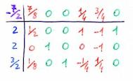
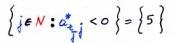
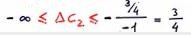

Torna alla pagina di Ricerca Operativa
:: Ricerca Operativa - Analisi post-ottimale ::
Quasi tutte le immagini di questa pagina sono prese dalle slide del prof Giovanni Righini
Il nome lascia poco all'immaginazione: l' analisi post-ottimale viene effettuata solo dopo aver trovato la soluzione ottima. Ma se l'abbiamo già trovata che altro dobbiamo calcolare a fare? Perché prima di tradurre la soluzione ottima in una decisione (assumendoci dunque una responsabilità) è opportuno studiare la robustezza del modello, ovvero valutare quanto cambierebbero i risultati se cambiassero i dati. Ricordiamo infatti che questi ultimi derivano da misurazioni, stime o previsioni, che dunque nel tempo potrebbero diventare più accurate o rivelarsi errate. I dati sono la matrice A, il vettore dei termini noti b e i coefficienti di costo ridotto CT.
Andando al sodo, quello che vogliamo studiare con l'analisi post-ottimale sono gli intervalli di variazione dei costi ridotti cj o dei termini noti bi entro cui la soluzione ottima rimane tale. Questo studio prende il nome di analisi di sensitività.
Perché la soluzione rimanga ottima dobbiamo garantire due condizioni:
b
c
Consideriamo il seguente problema:

Cambiamo uno dei coefficienti della funzione obiettivo e facciamolo variare finché non cambia la base ottima B = {1,2,3}. Interveniamo ad esempio sul "2" di x1, portandolo progressivamente a "2,1", "2,2", "2,3", e così via. La prima cosa che notiamo è che i valori dei coefficienti non influenzano in alcun modo il sistema dei vincoli, mentre hanno grande impatto sull'orientamento delle curve di livello: se il valore aumenta la curva ruota in senso orario, e viceversa.
Tornando al nostro caso, potremo continuare ad incrementare il coefficiente di x1 finché ci pare, dato che all'infinito la curva di livello assume una posizione verticale e dunque la base non cambia (il vincolo di x4 è infatti leggermente inclinato verso destra). Nota bene però: la base ottima e le x non cambiano, ma la soluzione sì! Non dimentichiamo che stiamo modificando i coefficienti della funzione obiettivo!
Continuiamo a considerare il coefficiente di x1 e proviamo stavolta a diminuirlo. Possiamo andare avanti finché vogliamo? No, perché ruotando in senso antiorario arriveremo ad un punto in cui le curve di livello diventeranno parallele al vincolo di x5 (esattamente quando C1 = 1), e se ruotassero anche solo di un millimetro la base cambierebbe perché diventerebbe ottimo il vertice in alto.
Distinguiamo ora le conseguenze della variazione dei costi ridotti e di quelle dei termini noti. Cominciamo dai primi.
Se j appartiene alla base B, allora la variazione dei valori del coefficiente Cj è compresa tra i valori minimi e massimi riportati nella seguente formula:
Dove:
Riportiamo l'esempio presente sulle slide:
 | ->tableau ->
|

|
Cosa succede quando cambiamo x1?
Ragioniamo: j = 1 appartiene a B? No! Quindi Δc1 <= 7/8.
Cosa succede se invece provo a cambiare il coefficiente di x2?
j = 2 appartiene a B? Sì, e in particolare rj = 2.
Quali sono i coefficienti strettamente positivi della riga 2 delle colonne fuori base?
Nessuno.
E quali sono invece i coefficienti strettamente negativi della riga 2 delle colonne fuori base?

Solo l'elemento della quinta colonna, che ha valore -1.
Quindi ho scoperto che:

cioè che il coefficiente di x2 può decrescere finché vuole, ma può aumentare al massimo fino a 3/4 se non vogliamo cambiare basi.
Considerando il seguente caso di riferimento:

Da un punto di vista geometrico, cambiare il termine noto b3 significa traslare il vincolo x3 verso il basso o verso l'alto a seconda che - rispettivamente - diminuiamo o aumentiamo il suo valore. La base ottima rimane sempre nell'intersezione tra i vincoli x4 e x5, ma spostando il vincolo 3 spostiamo anche lei, che continua a rimanere ottima finché non incontriamo una nuova intersezione.
Nell'esempio: se b3 diminuisce, il vincolo 3 trasla verso il basso finché non incontra l'intersezione tra l'asse x e il vincolo di x2, facendo diventare quest'ultimo attivo. Se invece b3 aumenta, allora il vincolo 3 trasla verso l'alto finché non si arriva all'intersezione tra x2 e x1, attivando quest'ultimo.
Per quanto riguarda i valori, nel nostro caso la base rimane ottima per 8 <= b3 <= 24, ma la soluzione ottima cambia e insieme ad essa anche il sistema dei vincoli, quindi la regione ammissibile.
Spostando questi ragionamenti nel tableau otterremo qualcosa di simile a quanto avevamo visto per le variazioni dei costi ridotti. Abbiamo due casi: o spostiamo un vincolo che in quel momento è attivo, o ne spostiamo un altro che in quel momento non lo è. Consideriamoli separatamente:
dove ci è la colonna della variabile di slack del vincolo i su cui sto facendo l'analisi
Partiamo dallo stesso tableau di prima:
L'analisi di sensitività ci dice qual è il range di variazione di coefficienti o termini noti entro cui non varia la base ottima, ma come facciamo a sapere cosa succede al di fuori di tale intervallo? Eseguiamo un' analisi parametrica, che ci permette di calcolare quanto varia il valore ottimo della funzione obiettivo al variare dei dati. Il risultato di questa attività è quasi sempre una funzione che lega il valore ottimo a un termine noto o a un coefficiente di costo ridotto. Con l'analisi parametrica potremo perciò identificare e modificare un vincolo e osservare come cambia la soluzione.

Come è fatta la funzione? Dato che il legame tra soluzione e coefficienti è di tipo lineare e che rimane tale indipendentemente dalla base, ne ricaviamo che a ogni range corrisponde un segmento di retta e quindi la funzione sarà lineare a tratti.
Altre due considerazioni sulla funzione:
Ovviamente anche l' analisi parametrica è un tipo di analisi post-ottimale